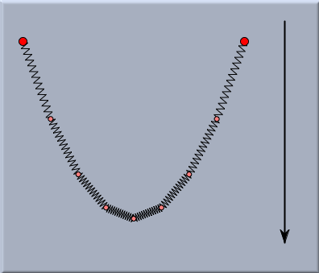
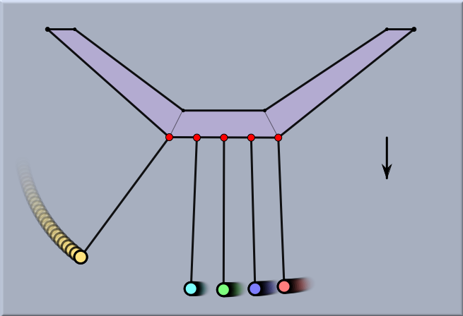

Cinderella and Physics
Cinderella comes with a powerful and easy-to-use physics simulation system. It is based on a numerical method (for experts: a Dormand-Prince-45 integrator with adaptive step width), allowing one simply to draw a physical experiment, press the play button, and observe what happens.
The entire physics simulation
CindyLab is based on pointlike particle masses and forces between them. As in the geometry part of Cinderella, there is usually no typed keyboard input necessary. You simply draw the experiment, which may contain masses, charged masses, springs, gravity, fixed planets, walls, etc. After you press the play button, the experiment is simulated by
CindyLab and its numerical integrator. An important feature is that you can influence the experiment at any time by grabbing masses with the mouse and moving them. In this way, you obtain a very realistic impression of how the experiment would behave in the real world.
 |
| Masses and springs under the influence of gravity |
Another important feature of
CindyLab is that it works seamlessly together with the geometry part of Cinderella and with the programming interface
CindyScript. By taking advantage of these connections one can considerably enhance the descriptive power of an experiment. The picture below shows a well-known arrangement of five pendulums with which one can nicely demonstrate the conservation of momentum. The masses are Cinderella points that are treated as more-or-less rigid balls. By constraining the points to be movable only on circles one can simulate the movement of a rigid pendulum.
 |
| A conservation-of-momentum system of pendulums |
The physical objects in Cinderella are permitted to exhibit a number of real-world properties. For instance, a particle may have a mass, a charge, and a radius. These properties may be controlled in two different ways: they may be adjusted manually using the inspector or altered programmatically using
CindyScript.
Continue -->
CindyLab and CindyScript